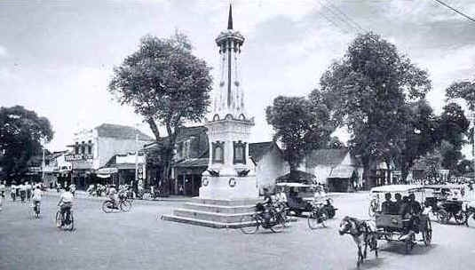

Yogyakarta memiliki sejarah penting dalam Indonesia, dimulai dari menjadi bagian dari Kerajaan Mataram Islam yang didirikan pada akhir abad ke-16. Pada 1755, Mataram terbagi menjadi dua kerajaan, Yogyakarta dan Surakarta, setelah Perjanjian Giyanti. Yogyakarta juga menjadi ibu kota Republik Indonesia pada 1946-1949 dan pusat perjuangan kemerdekaan. Pada 1948, Belanda sempat menguasai Yogyakarta, namun kota ini kembali menjadi pusat pemerintahan setelah perundingan. Selain itu, Yogyakarta memiliki status Daerah Istimewa (DIY) dengan Sultan yang menjabat sebagai Gubernur. Kota ini juga terkenal dengan warisan budaya dan sejarahnya, seperti Candi Borobudur dan Prambanan.
